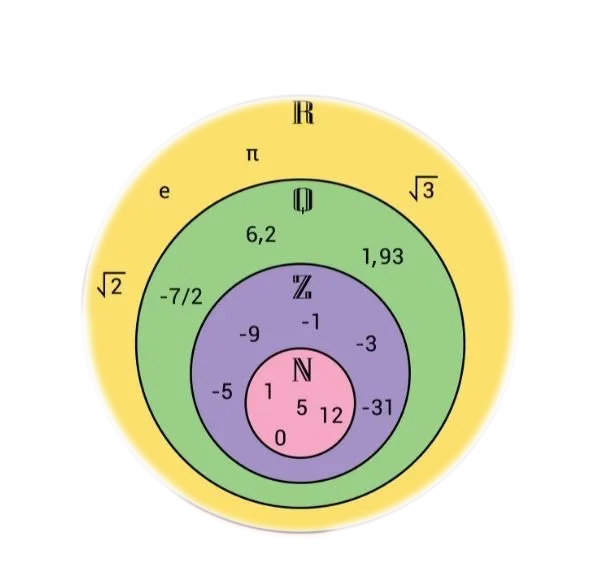

 Esta Imagem Representa todos os conjuntos estudados, de quais o nosso maior foco foi o dos Números Reais.
Neste conjunto existem os números de 0 à 9, por exemplo 1, 22, 420.
Neste conjunto existem os números negativos, mais o conjunto dos Naturais.
No conjunto dos Racionais, existem os números com vírgula, frações, mais os conjuntos dos Inteiros.
No conjunto dos Irracionais, existem os números infinitos, dízmas periódicas, raizes. Este conjunto não abranje os outros, ou seja, os números Racionais não estão incluídos neste conjunto.
No conjunto dos Reais, todos os números dos conjuntos Inteiros, Naturais, Racionais, e, Irracionais. Este é o conjunto mais utilizado pois abrange quase todos os números.
| Símbolo | | | Significado |
|---|---|---|
| ∈ | | | Pertence |
| ∉ | | | Não Pertence |
| ⊃ | | | Contém |
| ⊂ | | | Está Contido |
| = | | | Igual |
| ∪ | | | União |
| ∩ | | | Interseção |
| - | | | Subtração |
| Ø | | | Conjunto Vazio |
Quando um número x está no conjunto ele pertence, e quando o número x não está no conjunto ele não pertence. Exemplo: A={1, 2, 3}ㅤy = 7, ㅤ x = 2: ㅤ X ∈ A ,ㅤ Y ∉ A
Quando um conjunto A está no conjunto B e vice versa. Exemplo: A={1, 2, 3 ,4, 5} B={1, 3, 5}: ㅤA⊃B, ㅤB⊂A
União de Conjuntos, é quando se pega dois conjuntos e une eles. Exemplo A={0, 2, 4} B={1, 3, 5} ㅤ A∪B = {0, 1, 2, 3, 4, 5}
Interseção de Conjuntos, é quando se pega dois conjuntos e pega os números comuns entre eles. Exemplo A={1, 2, 4, 5} B={1, 3, 5} ㅤ A∩B = {1, 5}
Diferença é quando se pega dois conjuntos e retira os termos em comum.Exemplo: A={1, 2, 3, 4, 5} B={1, 2, 3, 4, 5} ㅤ A-B = Ø
É quando não existe um resultado, por exemplo A - A = Ø